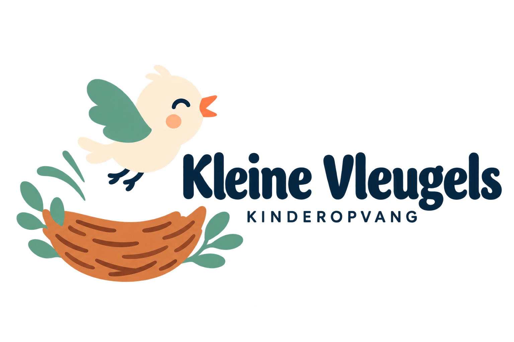

Naar de inhoud
Amsterdam · Kinderopvang in voorbereiding
Denk met ons mee

Onze opvang
Onze aanpak
Voor ouders
Tarieven
Beleid & protocollen
Kennismaken
Deze pagina is uitgevlogen
Even terug
naar
het nest.
We kunnen deze pagina niet vinden.
Naar de homepage